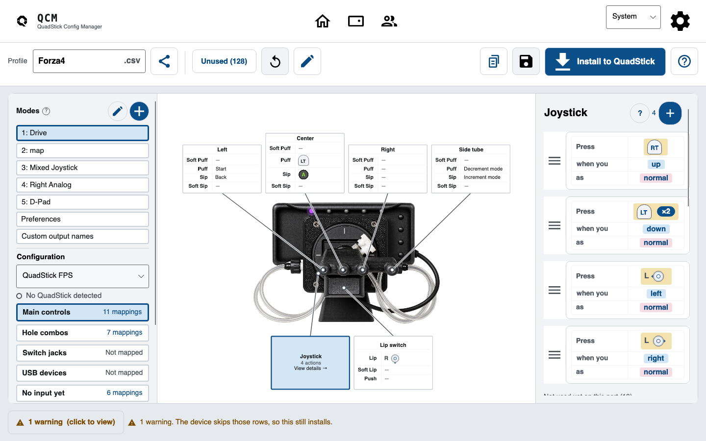
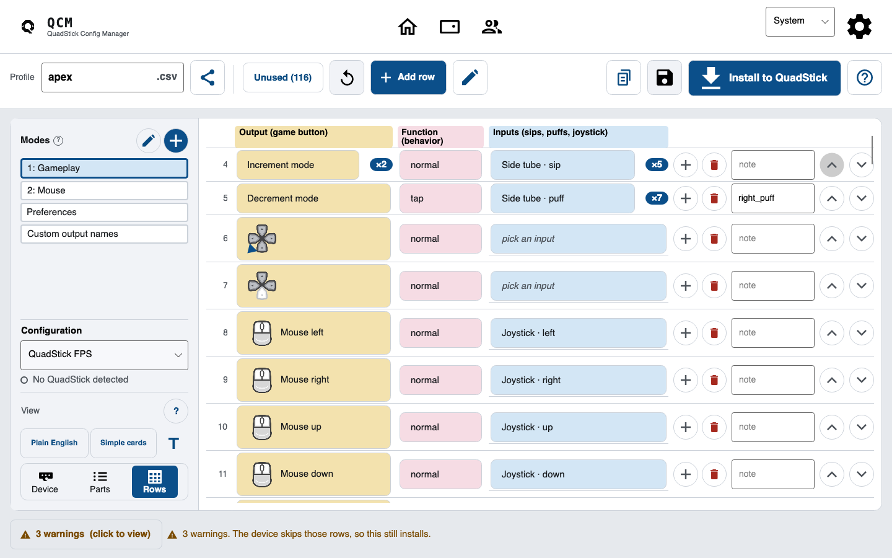
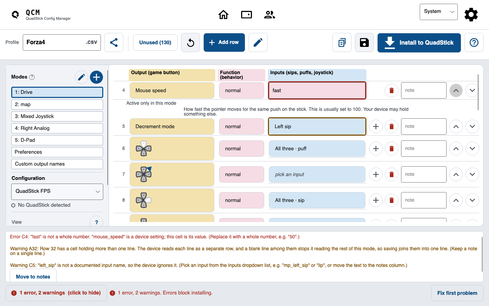

The QuadStick lets you game with your mouth. Every profile lives in one fragile CSV, and one bad cell can take the whole device down. This is a plain-language editor that catches the mistake before it ever reaches the hardware.
Today most people edit a QuadStick profile in Google Sheets, export it with an add-on, and copy it over with a Windows-only tool. The device just reads whatever CSV it's handed, and trusts it completely.
Break default.csv and the USB drive can vanish until you do a physical reset on the hardware. No warning, no undo. Just a controller that stopped showing up.
Every input, output, and function is checked against Fred's own validation data. Install backs up the old file, writes a copy, reads it back, then swaps it in. Overwriting default.csv always asks first.
Click the left tube, the lip switch, or the joystick and see exactly what a sip, puff, or nudge does. The soft variants are right there too, no manual required.
Every mapping is color-coded in the product's own grammar:

The list view knows the real input, output, and function names from Fred's validation data, so you type left_joy_left, not a guess. Add and delete rows without touching a formula.

Which cell, what's off, and how to fix it, in plain English. The bad cell gets a red outline, and errors block the install so nothing broken can reach the device.
Click any problem to copy it straight into a bug report.

No installer, no account, works offline (except the Sheets import). Grab the build for your computer.
make run.
Hi, I'm Bassam. A game developer and I built the QuadStick Config Manager because setting up a profile shouldn't mean wrestling a spreadsheet and hoping you don't brick your controller. The QuadStick opens up gaming for people, and the software around it should feel as accessible as the hardware does.
I'm actively maintaining this. If you hit a bug, or there's a mapping the app won't let you make, tell me and I'll fix it. That's the whole reason it exists.